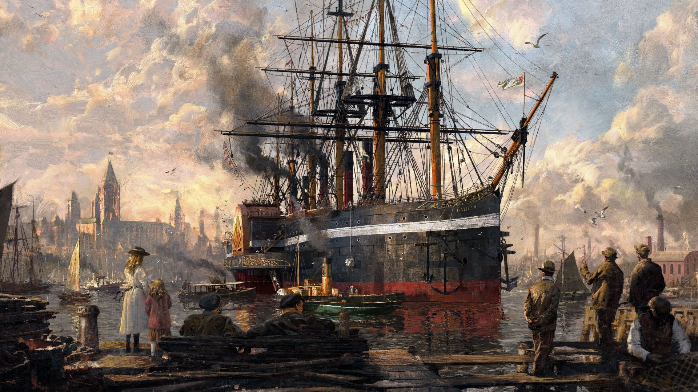

Locale: en-us
I provide a series of episodes on my youtube channel CtechGaming for ANNO 1800.Anno 1800 is a city-building real-time strategy video game, developed by Blue Byte and published by Ubisoft
Content
Series 01 : Anno 1800 Multiplayer gameplay 01
Anno 1800 co-op allows players to share the responsibilities of raising and managing an industrial empire with up to four people per team, with four team slots.
-
Set 01: The Old World
-
Part 01: gameplay - لعبة انو 1800 حلقة 1
The Old World is the first playable region in Anno 1800, which is based on Europe in the
19thcentury. Every game starts in the Old World, which should be a place of residence for majority of your population -
Part 02: gameplay - لعبة انو 1800 حلقة 2
Public buildings are defined by their ability to spread influence across the roads surrounding them. Within this influence, public buildings supply other buildings with services or protection.
-
Part 03: gameplay - لعبة انو 1800 حلقة 3
The range of a public building's influence is limited and depends on the building itself and the quality of the roads
-
-
Set 02: Resources
-
Part 04: gameplay - لعبة انو 1800 حلقة 4
For public buildings supplying a need, the dark green zone is where the building fully supplies the service to residences or other buildings
-
Part 05: gameplay - لعبة انو 1800 حلقة 5
Pub Provides a public service for your residents.
-
Part 06: gameplay - لعبة انو 1800 حلقة 6
Variety Theatre Provides a public service for your residents.
-
Part 07: gameplay - لعبة انو 1800 حلقة 7
Oil Storage Increases island storage for oil by 200. Requires free harbour area.
- info 01: Game_World
- info 02: Game_World
- info 03: Game_World
- info 04: Game_World
- info 05: Game_World
- info 06: Game_World
- info 07: Game_World
- info 08: Game_World
- info 09: Game_World
- info 10: Game_World
- info 11: Game_World
- info 12: Game_World
- info 13: Game_World
- info 14: Game_World
- info 15: Game_World
- info 16: Game_World
- info 17: Game_World
- info 18: Game_World
Part 08: gameplay - لعبة انو 1800 حلقة 8
Depot Increases overall storage capacity by 50 tons. Requires free harbour area.
-
-
Part 09: gameplay - لعبة انو 1800 حلقة 9
Ships are an essential part of Anno 1800 and the backbone of both the trading and warfare systems in the game.
Part 10: gameplay - لعبة انو 1800 حلقة 10
Ships can be produced in shipyards or bought from other factions. Players need a trading agreement to be able to buy ships from others
Part 11: gameplay - لعبة انو 1800 حلقة 11
Transporting cargo A ship typically has one or more cargo holds, each able to contain up to 50 tons of a single type of good at a time
Series 02 : Anno 1800 Multiplayer gameplay 02
Any ship can build a Warehouse on an unsettled island if it has the required building materials on board
-
Set 01: Workforce
-
Part 12: gameplay - لعبة انو 1800 حلقة 12
Sailing ships have to consider wind direction. If a ship sails against the wind, its speed is greatly reduced
-
-
Set 02: Attractiveness
-
Part 13: gameplay - لعبة انو 1800 حلقة 13
ships aren't affected by wind direction, and the Flagship, being a hybrid
-
Series 03 : Anno 1800 Multiplayer gameplay 03
The New World is the second playable region in Anno 1800, which is based on South America in the 19th century. This region can be unlocked after completing a discovery expedition
-
Set 01: Attractiveness
-
Part 14: gameplay - لعبة انو 1800 حلقة 14
Almost all needs of the New World population focus on goods produced on crop and animal farms. Some resources aren't used in the New World but can be transported to the European regions
-
Part 15: gameplay - لعبة انو 1800 حلقة 15
There are several goods which are produced in the New World but are (also) required in the Old World.
-
Part 16: gameplay - لعبة انو 1800 حلقة 16
Cape Trelawney is the third playable region in Anno 1800, available with the Sunken Treasures DLC.
-
Part 17: gameplay - لعبة انو 1800 حلقة 17
The Arctic is the fourth playable region of Anno 1800 and is inspired by the famous arctic expeditions of the 19th century.

-
-
Set 02: Resources
-
Part 18: gameplay - لعبة انو 1800 حلقة 18
Culture - All ornaments, animals in the zoo, exhibits in the museum and the World's Fair draw attention of visitors.
-
Part 19: gameplay - لعبة انو 1800 حلقة 19
Coins is the currency of Anno 1800. They are required to construct almost all buildings and buy goods, ships and items.
-
Part 20: gameplay - لعبة انو 1800 حلقة 20
City attractiveness is a new system in Anno, which rewards building beautiful and attractive cities. After building a public mooring on your island.
-
Series 04 : Anno 1800 Multiplayer gameplay youtube playlist embed
Exploring through the best industrial city building game
-
Set 01: ANNO1800-PlayList
-
Set 02: ANNO1800 best Soundtrack ever
Anno 1800 (Full Game Soundtrack)